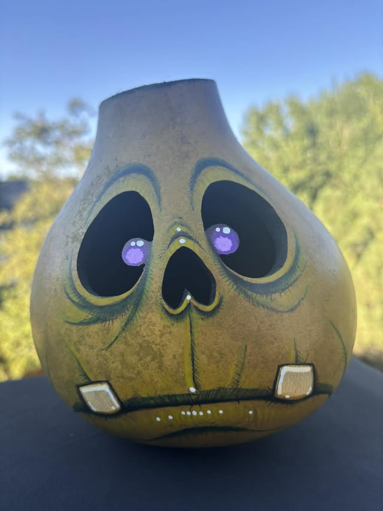
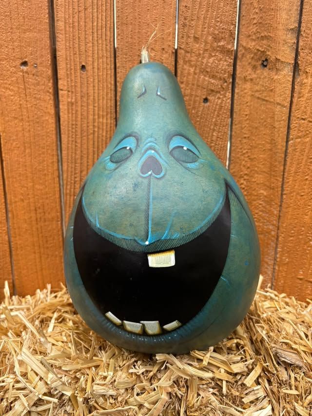
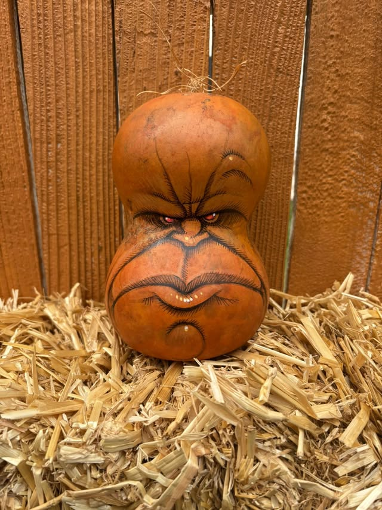

Fresh from Parker, Colorado
The 2026 harvest is here.
One-of-a-kind gourds with personality, spirit, and a suspicious amount of charm—hand-painted and ready to find good homes this October.
Every Gourdkin is unique. Dried gourds and artificial pumpkins can stay in the family for years.



The October adoption schedule
Come find your Gourdkin.
See the harvest in person every Sunday at the Parker Farmers Market. New personalities may appear throughout the month.
Four Sundays
8:00 a.m.–1:00 p.m.
- 04Sunday, October 4
- 11Sunday, October 11
- 18Sunday, October 18
- 25Sunday, October 25
The family album
Past harvests.
Every autumn brings a new crop of characters. Wander through a decade of familiar faces, strange creatures, and Gourdkins who have already found homes.
A homegrown tradition
Made by family.
Loved like family.
For more than two decades, our family has spent each autumn bringing unique dried gourds and pumpkins to life. We look forward to meeting the new faces—and seeing a few familiar ones—that emerge from every harvest.
Our hope is simple: find good homes for these personalities and make longtime friends who return to add to their Gourdkin family year after year. Keep them, share them, and enjoy them as they travel from our home in Parker, Colorado, to homes around the world.
gourdkins@gmail.com